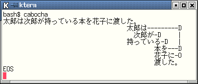
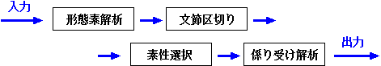
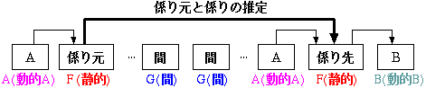

<!DOCTYPE HTML PUBLIC "-//W3C//DTD HTML 4.01//EN"
         "http://www.w3.org/TR/html4/strict.dtd">
<html>
<head>
<link rev=made href="mailto:taku-ku@is.aist-nara.ac.jp">
<title>CaboCha: Yet Another Japanese Dependency Structure Analyzer</title>
<link rel=stylesheet href="cabocha.css">
</head>
<body>

<h1>CaboCha/$BFn1;(B: Yet Another Japanese Dependency Structure Analyzer</h1>
<p>$Id: index.html,v 1.14 2001/07/08 16:15:32 taku-ku Exp $;</p>
<hr>

<h2>$B$O$8$a$K(B</h2>
<p>
<b>CaboCha</b> $B$O(B, Support Vector Machines $B$K4p$E$/F|K\8l78$j<u$12r@O4o$G$9(B. 
2001$BG/(B6$B7n8=:_(B, $BE}7WE*$JF|K\8l78$j<u$12r@O4o$H$7$F:G$b@:EY$,9b$$(B(89.29%)$B%7%9%F%`$H$J$C$F(B
$B$$$^$9(B. $B$^$?(B, $B%P%C%/%H%i%C%/$r9T$J$o$J$$7hDjE*$J2r@O%"%k%4%j%:%`(B 
(Cascaded Chunking Model) $B$r:NMQ$7$F$*$j(B, $B6K$a$F8zN($NNI$$2r@O$,9T$J$($^$9(B.
</p>

<h2>$BFCD'(B</h2>
<ul>
<li>Support Vector Machines (SVMs) $B$K4p$E$/(B, $B9b@-G=$J78$j<u$12r@O4o(B
<li>$B7hDjE*$J2r@O%"%k%4%j%:%`(B <b>(Cascaded Chunking Model)</b> $B$r:NMQ(B. $B9b8zN($J2r@O(B
<li>$B78$j4X78$=$N$b$N$rAG@-$H$7$F9MN8$9$k(B<b>$B!VF0E*AG@-!W(B</b>$B$r:NMQ(B, $B@:EY8~>e$KBg$-$/9W8%(B
<li>$BJ8@a$N6h@Z$K$b(B SVMs $B$r:NMQ(B ($B<B:]$K$O(B <a href="http://cl.aist-nara.ac.jp/~taku-ku/software/yamcha">YamCha</a>$B$r;HMQ(B)
<li>$B=@Fp$JF~NO7A<0(B. $B@8J8$O$b$A$m$s(B, $B7ABVAG2r@O:Q$_%G!<%?(B, $BJ8@a6h@Z$j:Q$_(B
    $B%G!<%?(B, $BItJ,E*$K78$j4X78$,IUM?$5$l$?%G!<%?$+$i$N2r@O$,2DG=(B
<li>$B78$j<u$1$NF1Dj$K;HMQ$9$kAG@-$r%f!<%6B&$G:FDj5A2DG=(B
<li>$B%G!<%?$rMQ0U$7$F$$$?$@$1$l$P(B, $B%f!<%6B&$G3X=,$r9T$&$3$H$,2DG=(B
<li>$B%7%=!<%i%9$H$$$C$?30It<-=q$O0l@ZITMW(B
<li><a href="http://pine.kuee.kyoto-u.ac.jp/nl-resource/juman.html">JUMAN</a> $BIJ;lBN7O$H(B 
    IPA $BIJ;lBN7O(B(<a href="http://chasen.aist-nara.ac.jp">ChaSen</a> $BIJ;lBN7O(B)$B$KBP1~(B
<li>$BFbIt$N<-=q$K(B, $B9bB.$J(B Trie $B9=B$$G$"$k(B 
<a href="http://cl.aist-nara.ac.jp/~taku-ku/software/darts">Double-Array</a> $B$r:NMQ(B
<li>1$BJ8(B/$BICDxEY$N8=<BE*$J2r@OB.EY(B
<li>C/C++/Perl/Ruby $B%i%$%V%i%j$NDs6!(B
</ul>

<h2><a name="news">$B?7Ce>pJs(B</a></h2>
<ul>
<li><strong>2001-7-7</strong>: <a href="#download">cabocha 0.1</a> Released<br>
<ul>
 <li>Initial Release!
</ul>
</ul>

<h2>$B3X=,%G!<%?$H2r@O@:EY(B</h2>
<ul>
   <table border>
   <tr>
    <td align="center">$BL>A0(B</td>
    <td align="center">$BFbMF(B</td>
    <td align="center">$B@:EY(B($B8e$m$+$i(B2$BHVL\$NJ8@a$NI>2A$r4^$a$k(B)</td>
   </tr>
   <tr>
    <td align="left">chasen-large</td>
    <td align="left"><a href="http://pine.kuee.kyoto-u.ac.jp/nl-resource/corpus.html">$B5~ETBg3X%3!<%Q%9(B</a>
 3.0 $B$r(B chasen$B$G2r@O$7$?7k2L$r3X=,(B</td>
    <td align="center">$BLs(B 91%</td>
   </tr>
   <tr>
     <td align="left">chaen-med</td>
     <td align="left"><a href="http://pine.kuee.kyoto-u.ac.jp/nl-resource/corpus.html">$B5~ETBg3X%3!<%Q%9(B</a>
 3.0 ($B4q?tF|(B,$B<R@b$O4q?t7n(B) $B$r(B chasen $B$G2r@O$7$?7k2L$r3X=,(B</td>
     <td align="center">90.20%</td>
   </tr>
   <tr>
     <td align="left">chasen-small</td>
     <td align="left"><a href="http://pine.kuee.kyoto-u.ac.jp/nl-resource/corpus.html">$B5~ETBg3X%3!<%Q%9(B</a>
 2.0 (950101-950108) $B$r(B chasen $B$G2r@O$7$?7k2L$r3X=,(B</td>
    <td align="center">88.37%</td>     
   </tr>
   <tr>
     <td align="left">juman-large</td>
     <td align="left"><a href="http://pine.kuee.kyoto-u.ac.jp/nl-resource/corpus.html">$B5~ETBg3X%3!<%Q%9(B</a>
 3.0 $B$r$9$Y$F3X=,(B</td>
     <td align="center">$BLs(B 91%</td>     
   </tr>
   <tr>
     <td align="left">juman-med</td>
     <td align="left"><a href="http://pine.kuee.kyoto-u.ac.jp/nl-resource/corpus.html">$B5~ETBg3X%3!<%Q%9(B</a>
 3.0 ($B4q?tF|(B,$B<R@b$O4q?t7n(B) $B$r3X=,(B</td>
    <td align="center">90.51%</td>     
   </tr>
   <tr>
     <td align="left">juman-small</td>
     <td align="left"><a href="http://pine.kuee.kyoto-u.ac.jp/nl-resource/corpus.html">$B5~ETBg3X%3!<%Q%9(B</a>
 2.0 (950101-950108) $B$r3X=,(B</td>
    <td align="center">89.29%</td>     
   </tr>
   </table>
 </ul>
<ul>
<li> $BG[I[%Q%C%1!<%8$K$O(B, chasen-large, chasen-small, juman-large, juman-small $B$,4^$^$l$F$$$^$9(B.
<li> cabocha $B$N%G%U%)%k%H$N%b%G%k$H$7$F(B, chasen-large $B$,@_Dj$5$l$F$$$^$9(B
</ul>

<h2><a name="download">$B%@%&%s%m!<%I(B</a></h2>
<ul>
<li>CaboCha $B$O(B <a href="http://www.gnu.org/copyleft/gpl.html">GNU General
    Public License (GPL)</a>$B$K=>$C$?%U%j!<%=%U%H%&%'%"$G$9(B.
<li>$BIUB0$N%b%G%k%U%!%$%k(B(model $B0J2<$N%U%!%$%k(B)$B$K$O(B, GPL $B$O(B<b>$BE,MQ$5$l$^$;$s(B</b>.
    GPL $B$O(B, $BIUB0$N%W%m%0%i%`$d3X=,%D!<%k$N%=!<%9!&%3!<%I(B, $B%I%-%e%a%s%H$N$_$KE,MQ$5$l$^$9(B.
<li>$BIUB0$N%b%G%k%U%!%$%k$O(B, $B3t<02q<RKhF|?7J9<R$N8f8|0U$K$h$j(B
    $BG[I[$5$l$F$$$kKhF|?7J95-;v(BCD-ROM$BHG$r4p$K3X=,(B, $B:n@.$5$l$?$b$N$G$9(B.
    $BIUB0$N%b%G%k%U%!%$%k$O(B, <a href="http://www.nichigai.co.jp/sales/mai_data/contract.pdf">
    $BKhF|?7J9%G!<%?;HMQ5vBz$K4X$9$k3P=q(B</a>$B$K5-:\$NMxMQ>r7oFb$G(B
    $B$=$N;HMQ5Z$S(B, $BJ#@=!$2~JQ!$HRI[$,G'$a$i$l$^$9(B. 
    $B$=$N$?$a(B, $B8&5fL\E*0J30$G$NMxMQ$O86B'$H$7$FG'$a$i$l$^$;$s(B. 
    $B8m2r$J$$$h$&$K8@$C$F$*$/$H(B, $B$3$l$O(B, CaboCha $B$NMxMQ$,8&5fL\E*$K8BDj$5$l$F$$$k$3$H$r0UL#$7$^$;$s(B. 
    $B$4<+?H$GMQ0U$J$5$C$?%3!<%Q%9$r4p$K(B, $BFH<+$K%b%G%k$r3X=,(B, $B:n@.$7$?>l9g$O(B, 
    $B8&5fL\E*0J30$NMxMQ$,2DG=$G$9(B. $B$?$@$7(B, CaboCha $B$r<+<R$N@=IJ$K(B
    $BAH$_$3$_(B, $BFs<!E*$JI{;:J*$r:n@.$7$?>l9g$O(B, $B$=$NI{;:J*$K$b(BGPL $B$,E,MQ$5$l$^$9$N$GCm0U$7$F$/$@$5$$(B.
<li>$BF`NI@hC<2J3X5;=QBg3X1!Bg3XBg3X$J$i$S$K9)F#(B $BBs$O(B, CaboCha $B$N%W%m%0%i%`(B $B5Z$SIUB0$N%b%G%k%U%!%$%k$NJ]>Z(B,
    $B$*$h$SFCDjL\E*$NE,9g@-$NJ]>Z$r4^$a(B $B$$$+$J$kJ]>Z$r$b9T$&$b$N$G$O$J$/!$(B
    CaboCha $B$N%W%m%0%i%`(B $B5Z$SIUB0$N%b%G%k$r;HMQ!$J#@=!$2~JQ!$HRI[$K$h$j@8$8$?B;32$dGe=~Ey$K$D$$$F$O!$(B
    $BK!N'>e$N:,5r$rLd$o$:0l@Z@UG$$rIi$$$^$;$s(B. $B$4Cm0U$/$@$5$$(B.
<li>$B>-MhE*$K$O(B, $BCx:n8"$d%i%$%;%s%9>e$NLdBj$+$i(B, $B%b%G%k%U%!%$%k$H%W%m%0%i%`$rJ,3d(B
    $B$7$FG[I[$9$kM=Dj$G$9(B.
</ul>

<ul>
<h3><a name="source">Source</a></h3>
<ul>
<li>cabocha-0.1.tar.gz:
<a href="./src/cabocha-0.1.tar.gz">HTTP</a> 
</ul>

<h3><a name="rpm">Binary/Source package for RedHat Linux</a></h3>
<ul>
<li>RedHat 6.x i386:
<a href="./redhat-6.x/RPMS/i386/">HTTP</a>
<li>RedHat 6.x SRPMS: 
<a href="./redhat-6.x/SRPMS/">HTTP</a>

<!--
<li>RedHat 7.x i386:
<a href="./redhat-7.x/RPMS/i386/">HTTP</a>
<li>RedHat 7.x SRPMS: 
<a href="./redhat-7.x/SRPMS/">HTTP</a>
-->
</ul> 

<h3><a name="rpm">Binary package for MS-Windows</a></h3>
<ul>
<li><a href="./win/">HTTP</a><br>
Windows $BHG$K$O(B, $B3X=,5!G=$O4^$^$l$F$$$^$;$s(B.
</ul>
</ul>

<h2><a name="install-unix">$B%$%s%9%H!<%k(B (UNIX $BJT(B)</a></h2>
<ul>
<li>$B$"$i$+$8$a%$%s%9%H!<%k$9$Y$-%W%m%0%i%`(B
<ul>
<li><a  href="http://cl.aist-nara.ac.jp/~taku-ku/software/yamcha/">YamCha</a> 
($BI,?\(B)
<li><a href="http://chasen.aist-nara.ac.jp/">ChaSen</a> 
($BI,?\(B)
<li><a href="http://pine.kuee.kyoto-u.ac.jp/nl-resource/juman.html">JUMAN</a> 
(JUMAN $BIJ;lBN7O(B $B$r;HMQ$9$k>l9g$OI,MW(B)
<li><a href="http://cl.aist-nara.ac.jp/~taku-ku/software/TinySVM/">TinySVM</a> 
($B3X=,$r9T$&>l9g$OI,?\(B)
<li>C++ $B%3%s%Q%$%i(B (g++ 2.95.1 $B0J>e(B $B$GF0:n3NG':Q$_(B)
</ul>

<li>$B%$%s%9%H!<%k<j=g(B 
<pre>
 % ./configure 
 % make
 % make check
 % su
 # make install
</pre>

$B0J2<$N9`L\$r(B chasenrc $B$rDI2C$7(B($B%3%a%s%H$r$O$:$7(B), $BO"7kIJ;l$N5!G=$rM-8z$K$7$^$9(B.

<pre>
($BO"7kIJ;l(B (($BL>;l(B $B?t(B))
          (($B5-9f(B $B%"%k%U%!%Y%C%H(B)))
</pre>

<li>$B$=$NB>(B
<ul>
<li>configure $B;~$N%*%W%7%g%s$G(B, <br>
    --prefix=/home/taku-ku/nltools $B$N$h$&$K(B <br>
    $B%$%s%9%H!<%k%Q%9$rJQ99$9$k$3$H$,2DG=$G$9(B. <br>
    $B$3$N>l9g(B, $B%$%s%9%H!<%k$K(BSuper User $B$N8"8B$OI,MW$G$O$"$j$^$;$s(B.
<li>configure $B;~$N%*%W%7%g%s$G(B, <br>
    --disable-shared $B$r;XDj$9$k$H(B, shared library $B$r:n@.$;$:(B, $B9bB.$J(B binary $B$,:n@.$G$-$^$9(B.
<li>configure $B;~$N%*%W%7%g%s$G(B, <br>
    --with-chasen-config=/usr/bin/chasen-config $B$N$h$&$K(B,<br>
    chasen-config $B$N%Q%9$rD>@\;XDj$9$k$3$H$,2DG=$G$9(B. 
<li>configure $B;~$N%*%W%7%g%s$G(B, <br>
    --with-chasen-config=/usr/bin/yamcha-config $B$N$h$&$K(B,<br>
    yamcha-config $B$N%Q%9$rD>@\;XDj$9$k$3$H$,2DG=$G$9(B. 
</ul>
</ul>

<h2><a name="install-windows">$B%$%s%9%H!<%k(B (Windows $BJT(B)</a></h2>
<ul>
<li>$B$"$i$+$8$a%$%s%9%H!<%k$9$Y$-%W%m%0%i%`(B
<ul>
<li><a
    href="http://chasen.aist-nara.ac.jp/chasen/distribution.html.ja">ChaSen for Windows (WinCha)</a> 
($BI,?\(B)
<li><a href="http://pine.kuee.kyoto-u.ac.jp/nl-resource/juman.html">JUMAN for Windows</a> 
(JUMAN $BIJ;lBN7O$r;HMQ$9$k>l9g$OI,MW(B)
</ul>

<li>$B%$%s%9%H!<%k<j=g(B 
<ul>
 <li> $BE,Ev$J%G%#%l%/%H%j$KE83+$7$^$9(B. <br>
  $B$3$3$G$O(B, c:\cabocha $B$H$7$FOC$^$9$N$G(B, $BE,59FI$_$+$($F$/$@$5$$(B.
 <li> c:\cabocha\cabocha.ini $B$r0J2<$N$h$&$KJT=8$7$^$9(B.
   <pre>
[cabocha]
cabocha = c:\cabocha\etc\cabocharc
   </pre>
   $B$3$3$GDj5A$7$?%U%!%$%k$,%G%U%)%k%H$N(B cabocharc $B$H$7$FMxMQ$5$l$^$9(B.
 <li>cabocha.ini $B$r(B C:\windows (win98$BEy(B) $B$b$7$/$O(B c:\winnt (WinNT,Win2000) $B$K%3%T!<$7$^$9(B.
 <li>$BE83+8e$N%G%#%l%/%H%j$K$"$k(B, cabocharc $B$rJT=8$7(B, c:\cabocha\model\
      $B0J2<$K$"$k%b%G%k$N%U%!%$%kL>$r;XDj$7$^$9(B.
   <pre>
chunker-model = c:\cabocha\model\IPA-chunker.model
parser-model  = c:\cabocha\model\IPA-dep.model
   </pre>
  JUMAN $B$N%b%G%k$r;HMQ$9$k>l9g$O(B, <a href="#juman">$B$3$A$i(B</a>$B$r;2>H$7$J$,$i(B, JUMAN $B$N%b%G%k$r;XDj$7$^$9(B.
 <li><a href="http://chasen.aist-nara.ac.jp/chasen/distribution.html.ja">WinCha</a> $B$KIUB0$N(B, chasen.dll $B$r(B, c:\cabocha\bin $B$K%3%T!<$7$F$*$-$^$9(B.
 <li>chasenrc $B$rJT=8$7(B, $BO"7kIJ;l$N5!G=$rM-8z$K$7$^$9(B.
 <li>$B$3$l$G%$%s%9%H!<%k$O40N;$7$^$7$?(B. <br>
      c:\cabocha\bin\cabocha.exe $B$r%3%^%s%I%i%$%s%W%m%s%W%H$+$i<B9T$7(B, $B@8J8(B
      $B$rF~NO$7$F$_$^$7$g$&(B.
 <li>JUMAN $B$r;H$&>l9g$O(B, <a href="#juman">$B$3$A$i(B</a>$B$r;2>H$7$J$,$i(B, JUMAN $B$N=PNO7k2L$r(B
      $BI8=`F~NO$+$iM?$($kI,MW$,$"$j$^$9(B.
</ul>
<li>$B$=$NB>(B
  <ul>
  <li>Windows $BHG$K$O(B, $B3X=,5!G=$O4^$^$l$^$;$s(B.
  <li>Windows $BHG$O(B, SJIS $B%3!<%I$rMQ$$$F$$$^$9(B.
  </ul>
</ul>

<h2><a name="usage-tools">$B;H$$J}(B</a></h2>
<ul>
<h3><li>$B$H$j$"$($:F0$+$7$F$_$k(B</h3>
<p>
cabocha $B$r5/F0$7$F(B, $B@8J8$rI8=`F~NO$+$iF~NO$7$F$_$F$/$@$5$$(B.<br>
$B%G%U%)%k%H$G(B, $B4J0W(B Tree $BI=<($K$h$j7k2L$r=PNO$7$^$9(B.
</p>

<p></p>

<p>
-f1 $B$H$$$&%*%W%7%g%s$G(B, $B7W;;5!$K=hM}$7$d$9$$%U%)!<%^%C%H(B (<a href="http://pine.kuee.kyoto-u.ac.jp/nl-resource/corpus.html">$B5~ETBg3X%3!<%Q%9(B</a>
$B%U%)!<%^%C%H(B)$B$G=PNO$7$^$9(B.
</p>
<pre>
% cabocha -f1
$BB@O:$O<!O:$,;}$C$F$$$kK\$r2V;R$KEO$7$?!#(B
* 0 5D 0/1 4.72957513
$BB@O:(B	$B%?%m%&(B	$BB@O:(B	$BL>;l(B-$B8GM-L>;l(B-$B?ML>(B-$BL>(B		
$B$O(B	$B%O(B	$B$O(B	$B=u;l(B-$B78=u;l(B		
* 1 2D 0/1 1.80409162
$B<!O:(B	$B%8%m%&(B	$B<!O:(B	$BL>;l(B-$B8GM-L>;l(B-$B?ML>(B-$BL>(B		
$B$,(B	$B%,(B	$B$,(B	$B=u;l(B-$B3J=u;l(B-$B0lHL(B		
* 2 3D 0/2 1.19385534
$B;}$C(B	$B%b%C(B	$B;}$D(B	$BF0;l(B-$B<+N)(B	$B8^CJ!&%?9T(B	$BO"MQ%?@\B3(B
$B$F(B	$B%F(B	$B$F(B	$B=u;l(B-$B@\B3=u;l(B		
$B$$$k(B	$B%$%k(B	$B$$$k(B	$BF0;l(B-$BHs<+N)(B	$B0lCJ(B	$B4pK\7A(B
* 3 5D 0/1 5.18588886
$BK\(B	$B%[%s(B	$BK\(B	$BL>;l(B-$B0lHL(B		
$B$r(B	$B%r(B	$B$r(B	$B=u;l(B-$B3J=u;l(B-$B0lHL(B		
* 4 5O 1/2 0.00000000
$B2V(B	$B%O%J(B	$B2V(B	$BL>;l(B-$B0lHL(B		
$B;R(B	$B%3(B	$B;R(B	$BL>;l(B-$B0lHL(B		
$B$K(B	$B%K(B	$B$K(B	$B=u;l(B-$B3J=u;l(B-$B0lHL(B		
* 5 -1D 0/1 0.00000000
$BEO$7(B	$B%o%?%7(B	$BEO$9(B	$BF0;l(B-$B<+N)(B	$B8^CJ!&%59T(B	$BO"MQ7A(B
$B$?(B	$B%?(B	$B$?(B	$B=uF0;l(B	$BFC<l!&%?(B	$B4pK\7A(B
$B!#(B	$B!#(B	$B!#(B	$B5-9f(B-$B6gE@(B		
EOS
</pre>

<h3><li>$B2r@O%l%$%d(B</h3>
<b>CaboCha</b>$B$K$O(B, $B2r@O%l%$%d$H$$$&35G0$,$"$j$^$9(B. $B2r@O%l%$%d$O(B, $B0J2<$K<((B
$B$9(B 4$B$D$N2r@OC10L$N;v$r;X$7$^$9(B. <b>CaboCha</b>$B$O(B, $B$3$l$i$N%l%$%d$r(B UNIX
pipe $B$N$h$&$K<h$j07$$$^$9(B. $B$D$^$j(B, $B8D!9$N2r@O%l%$%d$O(B<b>$B40A4$KFHN)$7$?6u4V(B</b>
$B$GF0:n$7(B, $B%f!<%6$O(B, $BG$0U$N%l%$%d$rF~NO$H$7$FM?$((B, $BG$0U$N%l%$%d$N=PNO$rF@$k$3$H$,$G$-$^$9(B.
<p></p>

<p>$B2r@O%l%$%d$O(B, -I, -O $B%*%W%7%g%s$K$FJQ99$7$^$9(B. <br>
-I $B$O(B $BF~NO$N%l%$%d(B, -O $B$O=PNO$N%l%$%d$G$9(B.
<pre>
  -I, --input-layer=LAYER   set input layer
             0 - raw sentence layer
             1 - POS tagged layer
             2 - POS tagged and Chunked layer
             3 - POS tagged, Chunked and Feature selected layer

  -O, --output-layer=LAYER  set ouput layer
             1 - POS tagged layer
             2 - Chunked layer
             3 - Chunked and Feature selected layer
             4 - Parsed layer (default)
</pre>

<p>
* $B7ABVAG2r@O$N$_(B
<pre>% cabocha -I0 -O1 </pre>

* $BJ8@a@Z$j$N$_(B
<pre>% cabocha -I0 -O2  </pre>

* $B78$j<u$12r@O$^$G9T$&(B
<pre>% cabocha -I0 -O4 </pre>

* RWCP $B%3!<%Q%9(B ($B7ABVAG2r@O:Q$_$N%G!<%?(B) $B$+$iF~NO(B
<pre>% cat rwcp.3000.ipa | cabocha -I1 -O4  </pre>

* <a href="http://pine.kuee.kyoto-u.ac.jp/nl-resource/corpus.html">$B5~ETBg3X%3!<%Q%9(B</a>
 ($B7ABVAG2r@O(B + $BJ8@a@Z$j:Q$_%G!<%?(B) $B$+$iF~NO(B
<pre>% grep -v "#" 950101.KNP | cabocha -I2 -O4  </pre>

* cabocha $B<+?H$rAH$_$"$o$;$k(B 
<pre>% chasen | cabocha -I1 -O2 | cabocha -I2 -O3 | cabocha -I3 -O4 </pre>

* $BAG@-A*Br$O(B $B<+J,$G:n@.$7$?(B perl $B%W%m%0%i%`(B
<pre>% cabocha -I0 -O2 | perl myscript.pl | cabocha -I3 -O4 </pre>
</p>


<h3><li>$B3F%l%$%d$N%U%)!<%^%C%H(B</h3>
<p>$B3F%l%$%d$NF~=PNO$N%U%)!<%^%C%H$r0J2<$K$^$H$a$^$7$?(B</p>
<table border> 
 <tr> 
  <td align="center">$B%l%$%dL>(B</td> 
  <td align="center">$BF~NO%U%)!<%^%C%H(B</td> 
  <td align="center">$B=PNO%U%)!<%^%C%H(B</td> 
 </tr> 
 <tr>
  <td align="center">$B7ABVAG2r@O(B</td> 
  <td align="center">$B0l9T0lJ8$G5-=R$5$l$?@8J8(B <a href="1-in.txt">($BNc(B)</a></td> 
  <td align="center">$B7ABVAG2r@O7k2L(B<br>ChaSen $B$HF1$8=PNO(B <a href="1-out-2-in.txt">($BNc(B)</a></td> 
 </tr>
 <tr>
  <td align="center">$BJ8@a6h@Z$j(B</td> 
  <td align="center">$B7ABVAG2r@O:Q$_%G!<%?(B <br>
                    ChaSen $B$N=PNO(B<br>
		    $B$b$7$/$O(B juman -e $B$N=PNO(B <a href="1-out-2-in.txt">($BNc(B)</a></td> 
  <td align="center">$B5~ETBg3X%3!<%Q%9%U%)!<%^%C%H(B<br>$B$?$@$778$j@h$O$9$Y$F(B -1
		    (*1) <a href="2-out-3-in.txt">($BNc(B)</a></td> 
 </tr>
 <tr>
  <td align="center">$BAG@-A*Br(B</td> 
  <td align="center">$B5~ETBg3X%3!<%Q%9%U%)!<%^%C%H(B,<br>
                     (*1) $B$N%U%)!<%^%C%H(B <a href="2-out-3-in.txt">($BNc(B)</a></td> 
  <td align="center">$B3HD%$7$?(B<br>$BFH<+%U%)!<%^%C%H(B (*2) <a href="3-out-4-in.txt">($BNc(B)</a> <br>
</td> 
 </tr>
 <tr>
  <td align="center">$B78$j<u$12r@O(B</td> 
  <td align="center">$B5~ETBg3X%3!<%Q%9$r3HD%$7$?(B<br>$BFH<+%U%)!<%^%C%H(B,<br>
                     (*2) $B$N%U%)!<%^%C%H(B <a href="3-out-4-in.txt">($BNc(B)</a></td>
  <td align="center">$B5~ETBg3X%3!<%Q%9$r3HD%$7$?(B<br>$BFH<+%U%)!<%^%C%H(B (*3) <a href="4-out.txt">($BNc(B)</a></td> 
 </tr>
</table>

<p>$B4JC1$J2r@b(B</p>
<ul>
 <li>$BJ8@a6h@Z$j%l%$%d$N=PNO%U%)!<%^%C%H(B (*1) <a href="2-out-3-in.txt">($BNc(B)</a><br>
     <p>
     $B7ABVAG2r@O:Q$_%G!<%?$KBP$7(B, $BJ8@a$N6h@Z$j>pJs$,IUM?$5$l$^$9(B.<br>
     $B6qBNE*$K$O(B, <b>*</b> $B$G;O$^$kJ8@a$N3+;O0LCV$r0UL#$9$k9T$,DI2C$5$l$^$9(B.<br>
     <b>*</b> $B$N8e$K$O(B, <b>$BJ8@aHV9f(B</b> (0$B$+$i;O$^$k@0?t(B), <br>
     <b>$B78$j@hHV9f(B </b> ($B78$j@h$OF1Dj$5$l$F$$$J$$$N$G>o$K(B -1) <br>
     $B$5$i$K(B <b>$B78$j%?%$%W(B</b>($BF1Dj$5$l$F$$$J$$$N$G>o$K(BO) $B$,B3$-$^$9(B.
     </p>

 <li>$BAG@-A*Br%l%$%d$N=PNO%U%)!<%^%C%H(B (*2) <a href="3-out-4-in.txt">($BNc(B)</a><br>
     <p>
     (*1)$B$N%U%)!<%^%C%H$NB>$K(B, <b>$B<g<-(B/$B5!G=8l(B</b>$B$N0LCV$H(B,<br>
     $BG$0U$N8D?t$N(B<b>$BAG@-Ns(B</b>$B$,IUM?$5$l$^$9(B. $BAG@-$K$D$$$F$N>\:Y$O(B<a href="#rdf">$B$3$A$i(B</a>$B$r$4Mw$/$@$5$$(B<br>
     </p>
     <p>
     <a href="3-out-4-in.txt">$BNc(B</a>$B$N:G=i$NJ8@a$K$O(B, "0/1" $B$H$$$&>pJs$,(B
     $BIUM?$5$l$F$^$9$,(B, <br>$B$3$l$O<g<-$,(B 0 $BHVL\$N7ABVAG(B (= $BB@O:(B),<br>
     $B5!G=8l$,(B $B0lHVL\$N7ABVAG(B (= $B$O(B) $B$H$$$&0UL#$K$J$j$^$9(B.<br>
     </p><p>
     <b>$B<g<-(B/$B5!G=8l(B</b>$B%U%#!<%k%I$O(B, $BAG@-A*Br%l%$%d$N%3%a%s%H$KAjEv$7(B,
     <b>CaboCha</b>$B$O(B, $B$3$N%U%#%k!<%I$r2r@O$K;HMQ$7$F$$$^$;$s(B.
     $B$3$N%U%#!<%k%I$O:#8eGQ;_$5$l$k$+$b$7$l$^$;$s(B.</p>

 <li>$B78$j<u$12r@O%l%$%d$N=PNO%U%)!<%^%C%H(B (*3) <a href="4-out.txt">($BNc(B)</a><br>
     <p>
     (*1) $B$G$O(B, $B78$j@h$,>o$K(B -1, $B%?%$%W$,>o$K(B O $B$G$7$?$,(B, 
     $B$3$l$i$,F1Dj$5$l$^$9(B.<br>
     $B$^$?(B, (*1)$B$N%U%)!<%^%C%H$NB>$K(B, $B$5$-$[$I@bL@$7$?(B <b>$B<g<-(B/$B5!G=8l(B</b>$B$N0LCV$H(B<br>
     <b>$B78$j4X78$N%9%3%"(B</b>$B$,DI2C$5$l$^$9(B.
     </p>
     <p>
     $B78$j4X78$N%9%3%"$O(B, $B78$j$d$9$5$NEY9g$r<($7$^$9(B. 
     $B0lHL$KBg$-$JCM$[$I78$j$d$9$$$3$H$rI=$7$^$9(B.
     $B$7$+$7(B, $B3F%9%3%"$H(B, $B<B:]$N2r@O@:EY$N4X78$OD4::Cf$G$9(B.
     $B$3$N%9%3%"$N0UL#$E$1$K4X$7$F$O6cL#$9$kI,MW$,$"$k$H9M$($F$$$^$9(B.
     </p>
</ul>

<h3><li>$B%3%^%s%I%i%$%s%*%W%7%g%s(B</h3>
<p>$BIQHK$K;HMQ$9$k%3%^%s%I%i%$%s$K$O0J2<$N$b$N$,$"$j$^$9(B.</p>

<p>
<pre>
  -f, --output-format=TYPE  $B=PNO%U%)!<%^%C%H$N;XDj(B
  -I, --input-layer=LAYER   $BF~NO%l%$%d$N;XDj(B
  -O, --output-layer=LAYER  $B=PNO%l%$%d$N;XDj(B
  -m, --parser-model=FILE   $B78$j<u$12r@OMQ%b%G%k$N;XDj(B
  -M, --chunker-model=FILE  $BJ8@a6h@Z$jMQ%b%G%k$N;XDj(B
  -r, --rcfile=FILE         $B%j%=!<%9%U%!%$%k$N;XDj(B  ($B>\:Y$O(B<a href="#cabocharc">$B$3$3(B</a>)
  -c, --chasenrc=FILE       chasenrc $B$N;XDj(B
  -o, --output=FILE         $B=PNO%U%!%$%k$N;XDj(B ($B;XDj$5$l$J$$$HI8=`=PNO(B)
</pre>
</p>

<p>
-m, -M $B%*%W%7%g%s$K$F(B, $B2r@OMQ$N%b%G%k(B(SVM $B$N%b%G%k(B)$B$rJQ99$9$k$3$H$,$G$-$^$9(B.
</p>

<p>$B$=$NB>$N%*%W%7%g%s$K$D$$$F$O(B, <a href="cabocha.html">$B$3$3(B</a>$B$r$4Mw$/$@$5$$(B.</p>


<h3><li><a name="cabocharc">$B%j%=!<%9%U%!%$%k(B</a></h3>
<p>
$B%3%^%s%I%i%$%s%*%W%7%g%s$r;H$&Be$o$j$K(B<br>
$B%Q%i%a!<%?$r%U%!%$%k$K5-=R$7(B, -r $B%*%W%7%g%s$G;XDj$9$k$3$H$,$G$-$^$9(B.<br>
$B$3$3$K%j%=!<%9%U%!%$%k$N(B<a href="cabocharc.txt">$BNc(B</a>$B$,$"$j$^$9(B.
</p>

<p>
$B%j%=!<%9%U%!%$%k$O(B, $B0J2<$N=gHV$GFI$_$3$^$l$^$9(B.
<ul>
<li>-r $B$G;XDj$5$l$?%U%!%$%k(B
<li>$B%[!<%`%G%#%l%/%H%j$N(B .cabocharc 
<li>$B4D6-JQ?t(B CABOCHARC $B$NCM(B
<li>C:\Windows, C:\WINNT $BEy$K$"$k(B cabocha.ini $B$KDj5A$5$l$?(B cabcharc (Windows$BHG$N$_(B)
<li>$B%3%s%Q%$%k;~$K7hDj$5$l$k%7%9%F%`%G%U%)%k%H(B <br>
    (UNIX: /usr/local/etc/cabocharc, Windows: C:\cabocha\etc\cabocharc)
</ul>
</p>

<h3><a name="juman">JUMAN $B$N%b%G%k$K$D$$$F(B</a></h3>
<p>
IPA $BIJ;lBN7O$H(B <UMAN $BIJ;lBN7O$O(B $BJL$N%b%G%k$r;H$C$F2r@O$7$^$9(B.<br>
$B$D$^$j(B, $B7ABVAG2r@O$K(B ChaSen $B$r;H$&$+(B, JUMAN $B$r;H$&$+$G(B, $B2r@O%b%G%k$rJQ99$9$kI,MW$,$"$j$^$9(B.
</p>

<p>
$BG[I[%Q%C%1!<%8$K$O(B, IPA $BIJ;lBN7OMQ$N%b%G%k$H(B JUMAN $BBN7OMQ$N%b%G%k$,(B
$BIUB0$7$F$$$^$9(B. $BFC$K;XDj$7$J$$8B$j(B, IPA $BIJ;lBN7O$,%G%U%)%k%H$H$7$F;HMQ$5$l$^$9(B.
</p>

<p>$B$b$7(B, JUMAN $BIJ;lBN7O$r;HMQ$9$k>l9g$O(B, $B0J2<$N$h$&$K%b%G%k$rJQ99$7$F$/$@$5$$(B.</p>

cabocha $B$r5/F0$7$F(B, cabocharc $B$N0LCV$rF1Dj(B.
<pre>
% cabocha --help
 ...
 -r, --rcfile=FILE   use FILE as rc file 
                     (default: /usr/local/etc/cabocharc)
</pre>

$B%m!<%+%k$K%3%T!<(B
<pre>
% cp /usr/local/etc/cabocharc .
</pre>

JUMAN $B$N%b%G%k$,;HMQ$5$l$k$h$&$K(B, $BJT=8(B (IPA $B$N%b%G%k$H%3%a%s%H$r$$$l$+$($k(B)<br>
$B$^$?(B, input-layer $B$r(B 1 $B$K$9$k(B
<pre>
% vi cabocharc 

# Input-Layer
input-layer = 1

# Parser model file name
parser-model  = /usr/local/lib/cabocha/model/JUMAN-dep.model

# Chunker model file name
chunker-model = /usr/local/lib/cabocha/model/JUMAN-chunker.model
</pre>

$B$3$N%b%G%k$r;HMQ$7$F2r@O(B
<pre>
% juman -e | cabochar -r cabocharc
</pre>

$BCm0U;v9`(B
<ul>
<li> IPA $BIJ;lBN7O(B(ChaSen)$B$H0[$J$j(B, JUMAN $BBN7O$rMQ$$$k>l9g$O(B, $B%l%$%d(B1 $B$K(B
     $BAjEv$9$k5!G=$r(B, <b>CaboCha</b>$B<+?H;}$A9g$o$;$F$$$^$;$s(B.<br>
     $BI,$:(B, input-layer = 1 $B$H@_Dj$7(B, juman -e $B$N=PNO$rI8=`F~NO$+$i(B
     $BF~NO$7$F$/$@$5$$(B
<li> $B2r@O@:EY$O0lHL$K(B JUMAN $BBN7O$N$[$&$,NI$$$h$&$G$9(B.<br>
     $B$3$l$O(B, $B3X=,%G!<%?$K(B JUMAN $BBN7O$G5-=R$5$l$?(B 
     <a href="http://pine.kuee.kyoto-u.ac.jp/nl-resource/corpus.html">$B5~ETBg3X%3!<%Q%9(B</a>$B$r;HMQ$7$F$k$3$H$K5/0x$7$^$9(B. 
</ul>

<h3><li>$BItJ,2r@O(B</h3>
<p>
<b>CaboCha</b>$B$O(B, $BItJ,E*$K2r@O:Q$_$N%G!<%?$+$i2r@O$r9T$&;v$,2DG=$G$9(B.
</p>
<p>
$B$^$:(B, $B%l%$%d(B2$B$^$G2r@O:Q$_$N%G!<%?$r:n@.$7$^$9(B.
$B$3$N;~E@$G$O(B, $B78$j<u$14X78$OF1Dj$5$l$F$*$i$:(B, $B78$j@h$O$9$Y$F(B -1, $B$H$J$C(B
$B$F$$$^$9(B. $B$3$N;~(B, -1 $B$NBe$o$j$K(B $B4X78$,7hDj$G$-$k$b$N$K8B$j(B, $B78$j@hHV9f$r;XDj(B
$B$7$F$*$-$^$9(B. (<a href="partial.txt">$BNc(B</a>)<br>
$B4X78$,$-$^$i$J$$>l9g$O$=$N$^$^(B -1 $B$H$7$F;D$7$F$*$-$^$9(B.
</p>
<p>
$B$"$H$O(B, $B$3$N%G!<%?$r%l%$%d(B3$B$NF~NO$H$7$FM?$((B, $B%3%^%s%I%i%$%s%*%W%7%g%s(B -C $B$r;HMQ$72r@O$r9T$J$$$^$9(B.<br>
<b>CaboCha</b>$B$O(B, $BItJ,E*$KM?$($?78$j4X78$N@)Ls$N85$G:GE,$J78$j4X78$r=PNO$7$^$9(B.

<pre>
% cabocha -I3 -O4 -C &lt; Input 
</pre>

<h3><li>$B78$j<u$14X78$N3X=,(B</h3>
     <p>
     $B78$j<u$1$N3X=,$K$O(B, $B5~Bg%3!<%Q%9%U%)!<%^%C%H$G5-=R$5$l$?3X=,%G!<%?$,I,MW$G$9(B.<br>
     $BIJ;lBN7O$O(B, IPA, JUMAN $B9%$-$J7A<0$r$4MxMQ$/$@$5$$(B.
     </p>
     <p>
     $B$^$:(B, cabocha-config $B$r(B --libexecdir $B$H$$$&(B $B%*%W%7%g%s(B $B$G5/F0$7(B, libexec $B$N(B
     $B%G%#%l%/%H%j$rI=<($5$;$^$9(B. <br>
     $B$=$N%G%#%l%/%H%j$K$"$k(B Makefile $B$rMxMQ$7(B, $B3X=,$r9T$J$$$^$9(B.
     </p>
     <p><pre>
% cabocha-config --libexecdir
/usr/local/libexec/cabocha
% grep -v "#" 950101.KNP &gt; train.data
% make -f /usr/local/libexec/cabocha/Makefile \ 
      CORPUS=train.data MODEL=case_study train
     </pre></p>
     <p>
     Makefile $B$KM?$($k;~$NI,?\%Q%i%a!<%?$H$7$F(B<b>CORPUS</b>$B$H(B <b>MODEL</b>$B$,$"$j$^$9(B.<br>
     <b>CORPUS</b>$B$O(B, $B5~Bg%3!<%Q%9%U%)!<%^%C%H$G5-=R$5$l$?3X=,%G!<%?$N%U%!(B
     $B%$%k$G(B, <br>
     <b>MODEL</b>$B$O(B, $B3X=,8e$K:n@.$5$l$k%b%G%k%U%!%$%k$d(B, $B3F<oCf4V%U%!%$%k$N(B prefix $B$H$J$j$^$9(B.
     </p>
     <p>
     $B>e5-$NNc$G$O(B, <b>CORPUS</b>$B$K(B train.data $B$r(B, <b>MODEL</b>$B$K(B case_study$B$r;XDj$7$F$$$^$9(B.
     </p>

     <p>$B3X=,8e$K(B, $B2<5-$N%U%!%$%k$,@8@.$5$l$^$9(B</p>

     <p>
     <pre>
% ls case_study.*
case_study.log           : $B3X=,2aDx$N%m%0(B
case_study.model         : $B%P%$%J%j7A<0$N%b%G%k(B ($B%"!<%-%F%/%A%c0MB8(B)
case_study.svmdata       : $BJQ498e$N3X=,$K%G!<%?(B
case_study.txtmodel.gz   : $B%F%-%9%H7A<0$N%b%G%k(B ($B%"!<%-%F%/%A%cHs0MB8(B)
     </pre>
     </p>
     <p>case_study.model $B$,3X=,8e$N%b%G%k$G$9(B. $B$3$N%b%G%k$r78$j<u$12r@O%b%G%k$H$7$F;HMQ$7$^$9(B.</p>
     <p>
     <pre>
% grep -v "#" &lt; 950103.KNP |  cabocha -m case_study.model -I2 -O4 -f1
     </pre>
     </p>
     
<h3><li>$BJ8@a6h@Z$j$N3X=,(B</h3>
<p>
$BJ8@a@Z$j$N3X=,$K$O(B, YamCha $B$r;HMQ$7$^$9(B.<br>
$BJ8@a@Z$j$N3X=,$r9T$J$&A0$K(B, YamCha $B$N%^%K%e%"%k$r0lFI$7$F$*$$$F2<$5$$(B. <br>
$B$^$?(B, IPA $BIJ;lBN7O$r;H$&$+(B, JUMAN $BIJ;lBN7O$r;H$&$+$G(B, $B3X=,J}K!$,HyL/$KJQ(B
$B$o$j$^$9(B. 
</p>

<p>
$B$^$:(B, yamcha-config $B$r(B --libexecdir $B$H$$$&(B $B%*%W%7%g%s(B $B$G5/F0$7(B, libexec $B$N(B
$B%G%#%l%/%H%j$rI=<($5$;$^$9(B. <br>
</p>

<pre>
% yamcha-config --libexecdir
/usr/local/libexec/yamcha
</pre>

<ul>
<li>IPA $BIJ;lBN7O$N>l9g(B<br>

<b>YamCha</b>$B$NF~NO%U%)!<%^%C%H$KJQ49(B
<pre>
% cat 950101.chasen | perl `cabocha-config --libexecdir`/IPA-conv.pl > IPA-train
($B3X=,%G!<%?$N%5%s%W%k$H$7$F(B <a href="IPA-sample.txt">$B$3$A$i(B</a> $B$r;2>H(B)
</pre>

$B3X=,(B
<pre>
% make -f /usr/local/libexec/yamcha/Makefile \
          CORPUS=IPA-train MDOEL=IPA-chunker train
IPA-chunker.model $B$,:n@.$5$l$k(B
</pre>

$B2r@O(B
<pre>
% chasen  | cabocha -I0 -O2 -M IPA-chunker.model
</pre>

<li>JUMAN $BIJ;lBN7O$N>l9g(B<br>

<b>YamCha</b>$B$NF~NO%U%)!<%^%C%H$KJQ49(B
<pre>
% cat 950101.KNP | perl `cabocha-config --libexecdir`/JUMAN-conv.pl > JUMAN-train
($B3X=,%G!<%?$N%5%s%W%k$H$7$F(B <a href="JUMAN-sample.txt">$B$3$A$i(B</a> $B$r;2>H(B)
</pre>

$B3X=,(B
<pre>
% make -f /usr/local/libexec/yamcha/Makefile \
          CORPUS=JUMAN-train MDOEL=JUMAN-chunker train
JUMAN-chunker.model $B$,$G$-$k(B
</pre>

$B2r@O(B
<pre>
% juman -e  | cabocha -I0 -O2 -M JUMAN-chunker.model
</pre>
</ul>

$B4JC1$J2r@b(B<br>
$BJ8@a6h@Z$j$O(B, $B0lHL$J(B IOB2 $B%b%G%k(B ($B<B:]$K$O(B O $B$OL5$$(B)$B$rMQ$$$F$$$^$9(B.
$B$D$^$j(B, $B3F7ABVAG$KBP$7(B, $B0J2<$N$h$&$J%?%0IUM?LdBj$H$_$J$7$F$$$^$9(B.
   
<pre>
B : $BJ8@a$N$O$8$^$j(B
I : $B$=$l0J30(B
</pre>

IPA-conv.pl $B$d(B, JUMAN-conv.pl $B$O(B, $B5~Bg%3!<%Q%9%U%)!<%^%C%H$r(B B-I
$B%?%0%b%G%k$KJQ49$9$k%9%/%j%W%H$K$9$.$^$;$s(B.
$B$3$N;~$N(B $B3X=,%G!<%?$N3F%+%i%`$O(B, 

<ul>
<li>IPA
<pre>$B8+=P$78l(B $BIJ;l(B1 $BIJ;l(B2 $BIJ;l(B3 $BIJ;l(B4 $B3hMQ7?(B $B3hMQ7A(B B-I$B%?%0(B</pre>

<li>JUMAN
<pre>$B8+=P$78l(B $BIJ;l(B1 $BIJ;l(B2 $B3hMQ7?(B $B3hMQ7A(B B-I$B%?%0(B</pre>
</ul>

$B$H$9$kI,MW$,$"$j$^$9(B. $B$b$7(B, $B3F%+%i%`$NAG@-$,L$Dj5A$N>l9g$O(B "*" 
$B$H$$$&%@%_!<%U%#!<%k%I$rEjF~$7$F$/$@$5$$(B.

<h3><a name="rdf"><li>$BAG@-$N:FDj5A(B</a></h3>
<p>
$B78$j<u$12r@O$KMQ$$$kAG@-$r%f!<%6B&$G:FDj5A$7$F3X=,(B, $B2r@O$r9T$&$3$H$,2DG=$G$9(B.<br>
$B6qBNE*$K$O(B, $B<+J,$GAG@-A*Br%l%$%d$N%W%m%0%i%`$r(B perl $BEy$G5-=R$7(B, 
$B$=$N=PNO$r(B, cabocha $B$N78$j<u$12r@O%l%$%d$KF~NO$9$k$H$$$&N.$l$K$J$j$^$9(B.
</p>
<p>
$BAG@-$K$O(B, $B0J2<$N(B 4$B$D$N<oN`$,$"$j$^$9(B. $B$=$l$>$lG$0U$NJ8;zNs$H$7$FM?$($^$9$,(B,
$B@hF,$N0lJ8;z(B (Prefix)$B$K$h$j6hJL$5$l$^$9(B.
</p>

<ul>
<li><b>$B@EE*AG@-(B</b>: Prefix <b>F</b><br>
    $BJ8@aFb$N>pJs$N$_$G7hDj$5$l$kAG@-$G$9(B. $BNc$($P(B, $B<g<-$d5!G=8l$N8lWC(B, $BIJ;l(B, $B3hMQ7A(B
    $B6gFIE@$NM-L5$J$I$,3:Ev$7$^$9(B.

<li><b>$B4VAG@-(B</b>: Prefix <b>G</b><br>
    $B:#$NCeL\$9$kJ8@a$r64$`(B 2$BJ8@a$N78$j4X78$NF1Dj$K;HMQ$5$l$^$9(B.
    $BNc$($P(B, $B3g8L$NM-L5$d(B $B=u;l$NM-L5$J$I$,3:Ev$7$^$9(B.

<li><b>$BF0E*AG@-(B A</b>: Prefix <b>A</b><br>
    $BCeL\$7$F$$$k78$j85$,78$j@h$K78$k$HH=Dj$5$l$?;~$K(B, $B78$j85$NF0E*AG@-(B A
    $B$,78$j@h$K7Q>5$5$l$^$9(B. <br><a href="#paper">$BO@J8(B</a>$B$NF0E*AG@-(B A,B$B$KAjEv$7$^$9(B.

<li><b>$BF0E*AG@-(B B</b>: Prefix <b>B</b><br>
    $BCeL\$7$F$$$k78$j85$,78$j@h$K78$k$HH=Dj$5$l$?;~$K(B, $B78$j@h$NF0E*AG@-(B B
    $B$,78$j85$K7Q>5$5$l$^$9(B. <br><a href="#paper">$BO@J8(B</a>$B$NF0E*AG@-(B C $B$KAjEv$7$^$9(B.
</ul>

<p>$B$3$l$i(B4$B$D$NAG@-$N4X78$r?^<($9$k$H0J2<$N$h$&$K$J$j$^$9(B.</p>
<p></p>
<p>
$B78$j85$H78$j@h$NF1Dj$K(B, $B?^Cf$N0LCV4X78$K$"$kJ8@aCf$NAG@-(B F,G,A,B $B$,;HMQ(B
$B$5$l$^$9(B.<br>
$B6qBNNc$H$7$F(B<a href="3-out-4-in.txt">$B$3$A$i(B</a>$B$r$4Mw$/$@$5$$(B.
</p>

<p>
$B<+J,$GAG@-$r:FDj5A$7$?>l9g$O(B, $BAG@-A*Br%l%$%d$^$G=*N;$7$?%G!<%?$r;HMQ$9$k$?$a$K(B,<br>
INPUT_LAYER=3 $B$H$$$&%*%W%7%g%s$r;XDj$9$kI,MW$,$"$j$^$9(B.<br>
<br>
$B%F%9%H%G!<%?$bF1MM$KAG@-A*Br%l%$%d$^$G=*N;$7$?%G!<%?$H$7$F:n@.$7$F$*$-$^$9(B.
</p>

<p>
<a href="selector.pl">$B$3$A$i(B</a>$B$K(B <b>CaboCha</b>$B$N(B selector (JUMAN $BBN7O(B)$B$r(B
Perl $B$G<BAu$7$?$b$N$,$"$j$^$9$N$G;29M$K$7$F$_$F$/$@$5$$(B.
</p>

<p>
<pre>
% my_selector.pl &lt; 950101.KNP &gt; train.selected
% make CORPUS=train.selected MODEL=foo INPUT_LAYER=3 train
% my_selector.pl &lt; 950102.KNP | cabocha -m foo.model -I3 -O4 -f1
</pre>
</p>

<h3><li><a name="rdf">C/C++ $B%i%$%V%i%j(B</a></h3>
<p>
<b>CaboCha</b>$B$K$O(B, C/C++ $B6&MQ$N%i%$%V%i%j(B (cabocha.h, libcabocha.so/licabocha.dll) $B$,$"$j$^$9(B.<br>
C++ $B%i%$%V%i%$$O(B, $B8=:_3+H/ES>e$NCJ3,$G(B, API $B$,BgI}$KJQ99$5$l$k2DG=@-$,$"$j$^$9$N$G(B, <br>
$B8=>u$O(B, C $B%i%$%V%i%j$r$*;H$$$/$@$5$$(B.
</p>
<p>C $B%i%$%V%i%j$O0J2<$N(B 3$B$D$N4X?t$rDs6!$7$F$$$^$9(B.

<dl>
<p>
<dt>
<code><font color="#dc143c">cabocha_t *</font><font color=DarkBlue>cabocha_getopt_argv</font>(int argc, char **argv)</code>
<dd>
cabocha $B$N%$%s%9%?%s%9$r@8@.$7$^$9(B.<br>
$B0z?t$K$O(B, C $B8@8l$N(B, main $B4X?t$G;HMQ$5$l$k(B argc, argv $B%9%?%$%k$N0z?t$rM?$($^$9(B.<br>
$B$3$N0z?t$O(B, <a href="cabocha.html">cabocha $B%3%^%s%I(B</a>$B$HF1$8J}K!$G=hM}$5$l$^$9(B.<br>
$B@.8y$9$l$P(B, cabocha_t $B7?$N%]%$%s%?$,JV$C$F$-$^$9(B. $B$3$N%]%$%s%?$rDL$7$F2r@O$r9T$$$^$9(B.<br>
</p>

<p>
<dt>
<code><font color="#dc143c">cabocha_t *</font><font color=DarkBlue>cabocha_getopt_argv2</font>(char *arg)</code>
<dd>
cabocha $B$N%$%s%9%?%s%9$r@8@.$7$^$9(B.<br>
$B0z?t$K$O(B, $B0l$D$NJ8;zNs$H$7$FI=8=$7$?%Q%i%a!<%?$rM?$($^$9(B.<br>
$B$3$N0z?t$O(B, <a href="cabocha.html">cabocha $B%3%^%s%I(B</a>$B$HF1$8J}K!$G=hM}$5$l$^$9$,(B, <br>
$BJ8;zNs$r2r<a$9$k%k!<%A%s$,IO<e$J$N$GN10U$7$F$/$@$5$$(B. <br>
$B@.8y$9$l$P(B, cabocha_t $B7?$N%]%$%s%?$,JV$C$F$-$^$9(B. $B$3$N%]%$%s%?$rDL$7$F2r@O$r9T$$$^$9(B.<br>
</p>

<p>
<dt><code><font color="#dc143c">char *</font><font color=DarkBlue>cabocha_sparse_tostr</font>(cabocha_t *p, char *str)</code>
<dd>
$B2r@O$r9T$$$^$9(B. $B0z?t$K$O(B, cabocha_getopt_argv $B$GF@$i$l$?(B cabocha_t $B7?$N%]%$%s%?$H(B, <br>
$B3F%l%$%d$N(B1$B2r@OC10L$r(B1$B$D$NJ8;zNs$GI=8=$7$?(B char $B7?$N%]%$%s%?J8;zNs$rM?$($^$9(B.<br>
$B%G%U%)%k%H$NF0:n$J$i$P(B, $B0z?t$NJ8;zNs$O@8J8$H$J$j$^$9(B.<br>
$B@.8y$9$l$P(B, $B2r@O8e$N7k2L$,(B char $B7?$N%]%$%s%?$H$7$FJV$C$F$-$^$9(B.<br>
$BLa$jCM$N%]%$%s%?$,;X$9%a%b%jNN0h$O(B, $B8F$S=P$7B&$G4IM}$9$kI,MW$O$"$j$^$;$s$,(B,<br>
cabocha_sparse_tostr $B$r8F$VEY$K>e=q$-$5$l$^$9(B. <br>
$B$^$?(B, cabocha_destroy $B$r8F$V$H2rJ|$5$l$^$9(B.
</p>

<p>
<dt><code><font color="#dc143c">void </font><font color=DarkBlue>cabocha_destroy</font>(cabocha_t *p)</code>
<dd>
cabocha_t $B7?$N%]%$%s%?$r2rJ|$7$^$9(B.
</p>
</dl>

<p>
<a href="example.c">$B%5%s%W%k%W%m%0%i%`(B</a>.
</p>

<p>
$B%3%s%Q%$%kJ}K!(B (UNIX)
<pre>
% cc -O2 `cabocha-config --cflags` example.c -o example \
         `cabocha-config --libs`
</pre>
</p>

<p>
$B@5>o$K%3%s%Q%$%k$rDL$9$K$O(B, -lstdc++ $B$H$$$&%j%s%+%*%W%7%g%s$,I,MW$+$b$7$l$^$;$s(B.
<pre>
% gcc -O2 `cabocha-config --cflags` example.c -o example \
          `cabocha-config --libs` -lstdc++
</pre>
</p>

<p>
$B%3%s%Q%$%kJ}K!(B (Windows)<br>
<p>
$B$^$:(B, $B%3%s%Q%$%k:n6H$r9T$&%G%#%l%/%H%j$K(B
cabocha.h, libcabocha.dll, libcabocha.def $B$r%3%T!<$7$^$9(B.<br>
$B$3$N8e$N:n6H$O(B, $B;HMQ$9$k%3%s%Q%$%i$K$h$C$FHyL/$KJQ$o$j$^$9(B.
</p>

<p>
cygwin/mingw $B4D6-$N>l9g(B
<pre>
$B%$%s%]!<%H%i%$%V%i%j$N:n@.(B
% dlltool.exe --input-def libcabocha.def --dllname \
             libcabocha.dll --output-lib libcabocha.a
$B%3%s%Q%$%k(B
% gcc -DCABOCHA_DLL_IMPORT -I. example.c -o example.exe libcabocha.a 
</pre>
</p>

<p>
BCC32 $B4D6-$N>l9g(B
<pre>
$B%$%s%]!<%H%i%$%V%i%j$N:n@.(B
% implib.exe /a /f libcabocha.lib libcabocha.dll
$B%3%s%Q%$%k(B
% bcc32 -DCABOCHA_DLL_IMPORT -I. example.c libcabocha.lib
</pre>
</p>

<p>
$B$5$i$K(B, <a href="example2.c">$B$3$A$i(B</a>$B$NNc$h$&$K(B, libcabocha.dll $B$HF0E*(B
$B$K%j%s%/$9$k$3$H$b2DG=$G$9(B.<br>
$B$3$N>l9g$O(B, $B%$%s%]!<%H%i%$%V%i%j$r:n@.$9$kI,MW$O$"$j$^$;$s(B.
</p>

<h3><li><a name="perl/ruby">Perl/Ruby $B%P%$%s%G%#%s%0(B</a></h3>
Perl $B$d(B Ruby $B$H$$$C$?%9%/%j%W%H8@8l$+$i(B, $BD>@\(B <b>CaboCha</b>$B$r8F$V$3$H$,$G$-$^$9(B. <br>
$B>\$7$/$O(B, ruby/README, perl/README $B$r$4Mw$/$@$5$$(B.
</ul>

<h2><a name="paper">CaboCha $B$K4X$9$kH/I=(B</a></h2>
 $B2<$NFs$D$O(B $B2r@O%"%k%4%j%:%`$,0[$J$j$^$9!#(BSVM$B$K$h$k78$j<u$12r@O$H$$$&4QE@$G;29M$K$7$F$/$@$5$$!#(B
 <ul>
 <li>$B9)F#(B $BBs(B, $B>>K\(B $BM5<#(B (2001)<br>
         $B%A%c%s%-%s%0$NCJ3,E,MQ$K$h$k78$j<u$12r@O(B, SIG-NL-142
                 [<a href="http://cl.aist-nara.ac.jp/~taku-ku/publications/nl142.ps">Postscript</a>]
                 [<a href="http://cl.aist-nara.ac.jp/~taku-ku/publications/nl142-ohp.pdf">PDF (OHP)</a>]
 <li>$B9)F#(B $BBs(B, $B>>K\(B $BM5<#(B (2000) <br>
         Support Vector Machine $B$K$h$kF|K\8l78$j<u$12r@O(B SIG-NL-138
         [<a href="http://cl.aist-nara.ac.jp/~taku-ku/publication/nl138.ps">Postscript</a>]
 <li>Taku Kudoh, Yuji Matsumoto (2000)<br>
         Japanese Dependency Analysis  Based on Support Vector Machines,EMNLP/VLC 2000
        [<a href="http://cl.aist-nara.ac.jp/~taku-ku/publication/vlc2000.ps">Postscript</a>]
 </ul>
</ul>
<h2><a name="TODO">TODO</a></h2>
<ul>
<li>$B>iD92r@O(B
<li>$B%H%C%W%@%&%s2r@O$H$NM;9g(B
<li>$BJ8;z%3!<%I$NF0E*$JJQ99(B
<li>Selector $B$NDj5A$r30$K=P$9(B
<li>$B%?%0IUM?%D!<%k$N:n@.(B
<li>$B%(%i!<%U%#!<%I%P%C%/%7%9%F%`$N9=C[(B
<li>$B1Q8l$N78$j<u$1(B
<li>$BFbItI=8=$N@vN}(B (XML/DOM $B$NMxMQ(B)
</ul>

<h2><a name="ack">$B<U<-(B</a></h2>
<ul>
<li>$B3t<02q<RKhF|?7J9<R$N8f8|0U$K$h$j!$KhF|?7J95-;v(BCD-ROM$BHG$K4X$7$F!$(B
    $B8&5fL\E*$G$N;HMQ>5Bz$r$$$?$@$-$^$7$?(B. $B$3$3$K46<U$$$?$7$^$9(B.
<li>$B5~ETBg3X%3!<%Q%9$r:n@.$7(B, $BL5=~$G8x3+$J$5$C$F$$$k(B
    $B5~ETBg3X(B<a href="http://pine.kuee.kyoto-u.ac.jp">$B8@8l%a%G%#%"8&5f<<(B
    </a>$B$N3'$5$^$K46<U$$$?$7$^$9(B.<br>
    $BFC$K(B, $BF1%3!<%Q%9:n@.$NCf?4E*Lr3d$r2L$?$7$F$$$i$C$7$c$k9u66DwIW(B 
    $B=u65<x$K46<U$$$?$7$^$9(B.
<li>$B5~Bg%3!<%Q%9$N(B JUMAN $BBN7O$r(B IPA $BBN7O$KJQ49$9$k%9%/%j%H$rDs6!$7$F$$$?(B
    $B$@$$$?KLB<(B $BH~Jf;R;a$K46<U$$$?$7$^$9(B.
<li>IPA $BIJ;lBN7O$K$*$1$k<g<-(B,$B5!G=8l%k!<%k$r:n@.$7$F$$$?$@$?$$$?(B
    $B>>K\(B $BM5<#(B $B65<x$K46<U$$$?$7$^$9(B.
<li>JUMAN $BJB$S$K(B ChaSen $B$N3+H/<T$NJ}!9$K46<U$$$?$7$^$9(B.
<li>CaboCha $B$N3+H/CJ3,$K$*$$$FB?$/$N%3%a%s%H$r$$$?$@$$$?>>K\8&5f<<$N3'$5$^$K46<U$7$^$9(B.
</ul>
<hr>
<p>
$Id: index.html,v 1.14 2001/07/08 16:15:32 taku-ku Exp $;
</p>
<address>
taku-ku@is.aist-nara.ac.jp
</address>
</body>
</html>
